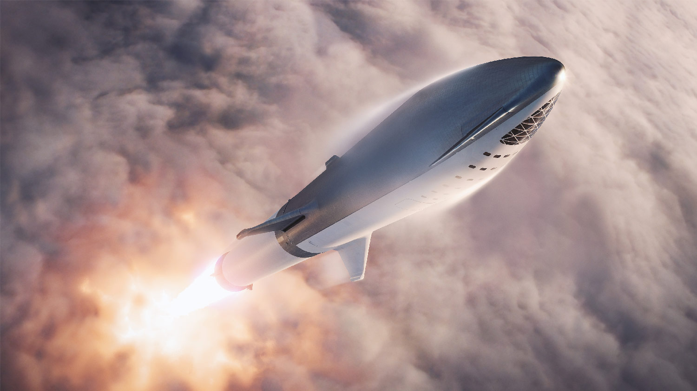
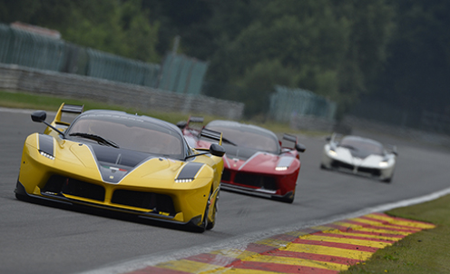

O Aventador LP 750-4 Superveloce toma emprestado ainda uma série de tecnologias vindas do ainda mais raro Lamborghini Veneno, inclusive na mesma receita de diminuição de peso e de aumento de potência do motor, só que por um décimo do preço pedido pelo supercarro de 2013, com apenas três unidades produzidas por 3,1 milhões de euros. O SV tem desempenho até ligeiramente melhor do que desses dois superesportivos exclusivos, vai aos 100 km/h em 2,8 segundos e ultrapassa os 350 km/h de velocidade máxima. Na medida para fazer valer a sigla surgida em 1971 no Miura SV e continuada pelo Diablo SV de 1996 e pelo antecessor Murciélago SV de 2009. A estrutura e carroceria parecem se valer de boa parte da tabela periódica para obter peso mínimo. O chassi é inteiro em fibra de carbono, material que é repetido no capô, spoilers e entradas de ar laterais. O alumínio foi a pedida para o capô dianteiro, para-lamas frontais e portas. Já os para-lamas traseiros e as soleiras das portas são feitos em material composto. As enormes rodas de aros finíssimos estrearam no carro com a mesma missão e até adotaram porcas centrais para diminuir a massa rotante dos parafusos usados normalmente.
Postado por ADERSON DE SENA
SpaceEX - Revolução Espacial!

O Programa de Tripulações Comerciais da NASA confirmou esta semana um atraso no vôo de teste planejado do módulo Crew Dragon da SpaceX. O voo de teste Demo-1 não tripulado, verá o módulo de carga adaptado para astronautas disparar para o espaço. A Nasa, em parceria com a SpaceX e a Boeing, pretende diminuir sua dependência dos foguetes russos Soyuz para enviar astronautas à Estação Espacial Internacional (ISS). A agência espacial norte-americana agora tem como alvo o dia 2 de março para o lançamento do Crew Dragon da SpaceX e “não antes de abril” para o teste de voo não tripulado da Boeing.
Postado por ADERSON DE SENA
Ferrari GT - F XX K 1050 HP!

FXX-K is Ferrari’s research and development programme centring around a laboratory car based on Maranello’s first hybrid. The K in the new car’s moniker is a reference to the KERS kinetic energy recovery system used to maximise performance on the track. The 2018 season will be the introduction of the brand new EVO kit.The 488 Challenge is the first ever turbo-charged model to race and is the most powerful Challenge car ever, powered by the 670 cv 3.9-litre V8 derived from the series production engine that took the 2016 and 2017 International Engine of the Year Award.